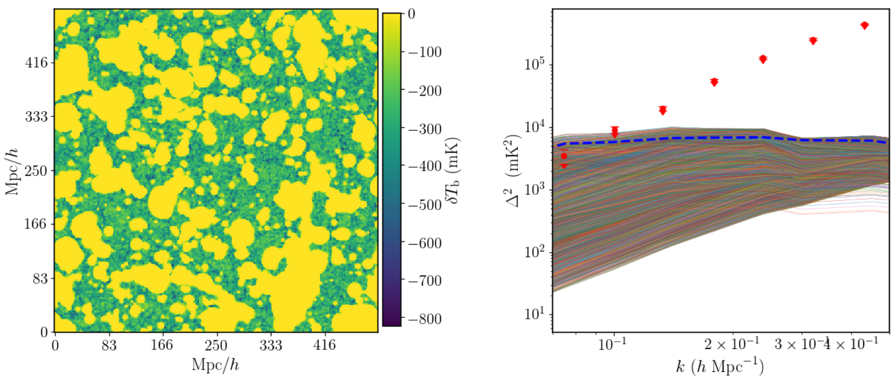
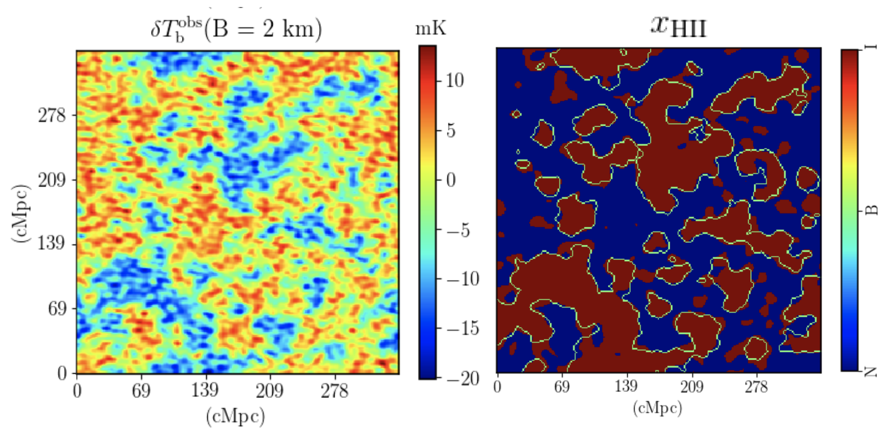
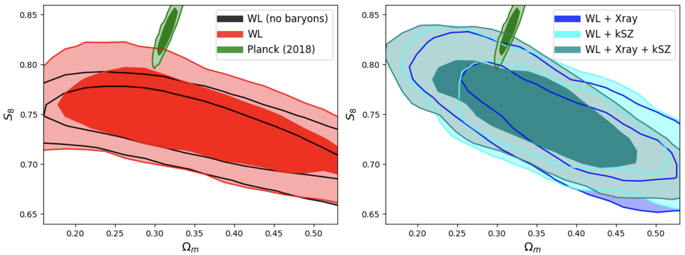
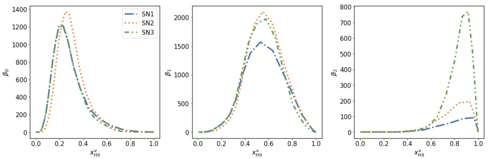

Sambit Giri
Machine Learning & Data Analysis Expert in Astronomy and Cosmology
Leveraging AI and advanced statistical methods to decode the universe's largest structures
Machine Learning in Cosmology
Deep learning, neural networks, and AI-driven analysis of astronomical data to extract insights from large-scale surveys.
Statistical Modeling
Bayesian inference, MCMC methods, and advanced statistical techniques for parameter estimation and model selection.
Big Data Analysis
Processing and analyzing massive astronomical datasets from surveys to understand cosmic structure formation.
Computational Methods
High-performance computing, numerical simulations, and algorithm development for cosmological research.
About
I am a machine learning and data analysis expert specializing in astronomical and cosmological applications. My work combines cutting-edge AI techniques with astrophysics to solve complex problems in understanding the universe.
With deep expertise in both the theoretical foundations of cosmology and the practical applications of modern data science, I develop innovative approaches to extract meaningful insights from massive astronomical datasets and advance our understanding of cosmic structure formation.

A new rendition of the Flammarion engraving created for the cover page of my PhD thesis. The Flammarion engraving represents humanity's curiosity about the universe. Our version envisions that the Square Kilometre Array (SKA) will play a pivotal role in advancing our quest for understanding the cosmos.
Technical Expertise
- Machine Learning: Deep learning, neural networks, CNNs, GANs, transformers for astronomical data
- Statistical Methods: Bayesian inference, MCMC, Gaussian processes, likelihood analysis
- Data Analysis: Large-scale survey data processing, signal extraction, feature engineering
- Scientific Computing: Python, TensorFlow, PyTorch, scikit-learn, JAX, NumPy ecosystem
- Cosmological Simulations: N-body simulations, hydrodynamical simulations, emulators
- High-Performance Computing: Parallel computing, GPU acceleration, distributed systems
Research
Machine Learning for Large-Scale Structure

Reionization simulation showing the ionization state (left) and 21-cm signal (right) in a 714 Mpc volume.
Developing and applying deep learning architectures to analyze and predict the formation of cosmic structures. Using convolutional neural networks and generative models to understand the complex patterns in the cosmic web and extract physical parameters from observational data.
Bayesian Inference & Parameter Estimation

LOFAR upper limits (red points) with various reionization models, constraining properties of the intergalactic medium.
Implementing advanced statistical methods including MCMC, nested sampling, and Gaussian processes to constrain cosmological parameters from survey data. Creating efficient inference pipelines for high-dimensional parameter spaces.
Structure Identification with Deep Learning

Machine learning-based identification of ionized regions in noisy 21-cm observations from the Square Kilometre Array.
Developed techniques to identify meaningful features in noisy astronomical data using machine learning. These methods are packaged into the open-source framework, Tools21cm.
Baryonic Feedback Modeling

Constraints on cosmological parameters using KiDS-1000 weak lensing data combined with X-ray and kinematic observations.
Building emulators and surrogate models using machine learning to accelerate cosmological simulations. Applying likelihood-free inference methods to compare observations with theoretical predictions efficiently.
Advanced Summary Statistics

Betti numbers quantifying the morphology of ionized regions during reionization using topological data analysis.
Leveraging artificial intelligence for automated pattern recognition, signal detection, and hypothesis generation in astronomical data. Combining domain expertise with ML to enable new scientific discoveries.
Publications
My research has been published in leading astrophysics and cosmology journals. You can find a complete list of my publications through the links below.
View on ORCID Google ScholarFor collaboration inquiries or to discuss research, please feel free to reach out through the contact page.
Codes & Tools
I develop and maintain open-source machine learning and data analysis tools specifically designed for astronomical and cosmological research. These tools enable researchers to apply state-of-the-art ML techniques to their data.
ML Tools for Cosmology
Production-ready implementations of machine learning models for cosmological data analysis, including neural network architectures optimized for astronomical datasets, pre-trained models, and inference pipelines.
AstronomyCalc
A comprehensive collection of Jupyter notebooks demonstrating practical applications of data science and machine learning in astronomy. Includes tutorials on statistical analysis, data visualization, and ML model development for cosmological research.
View on GitHub ML NotebooksData Analysis Pipelines
Scalable data processing pipelines for large astronomical surveys, featuring automated quality control, feature extraction, and statistical analysis tools. Built with modern Python data science stack including pandas, scikit-learn, and PyTorch.
Curriculum Vitae
My CV showcases extensive experience in applying machine learning and advanced data analysis techniques to cosmological research, including development of novel algorithms, leadership of data-intensive projects, and contributions to major astronomical surveys.
Highlights
Machine Learning Expert with proven track record in developing and deploying AI solutions for astronomical data analysis. Specialized in deep learning for cosmic structure analysis, Bayesian inference for parameter estimation, and scalable data processing pipelines for large surveys.
Technical Skills: Python (TensorFlow, PyTorch, JAX), statistical modeling (MCMC, nested sampling), high-performance computing, version control (Git), containerization (Docker), and cloud computing platforms.
Contact
I'm always interested in discussing machine learning applications in cosmology, data analysis collaborations, or consulting opportunities in astronomical data science. Feel free to reach out through any of the following channels:
Collaboration & Consulting
I'm available for collaborations on ML-driven cosmology projects, data analysis consulting for astronomical surveys, and developing custom machine learning solutions for astrophysics research challenges.